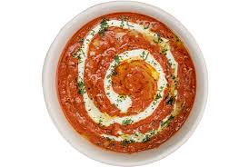

Dal Makhani
Dal Makhani is a rich and creamy lentil dish made from black urad dal and kidney beans, slow-cooked to perfection.
Read MoreDal Makhani is a rich and creamy lentil dish made from black urad dal and kidney beans, slow-cooked to perfection.
Read MoreButter Chicken is a popular Punjabi dish made with marinated chicken cooked in a creamy tomato gravy.
Read MorePaneer Tikka is a popular vegetarian dish where paneer cubes are marinated in spices and grilled to perfection.
Read MoreAmritsari Kulcha is a stuffed Indian flatbread, traditionally made with spicy potato filling, served with chole.
Read MoreSarson Ka Saag is a traditional Punjabi dish made from mustard greens and spices, best served with Makki di Roti.
Read More